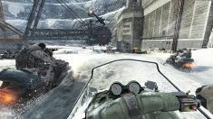
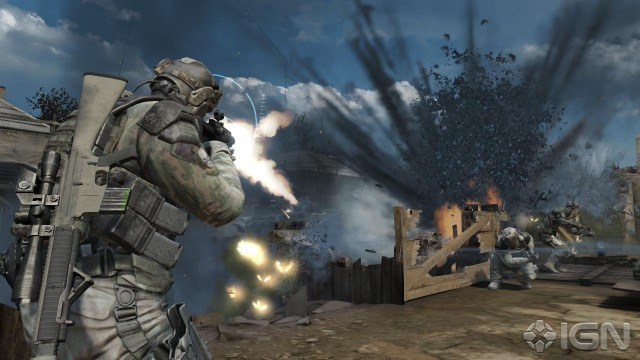

Call of Duty: Modern Warfare 3 is the next chapter in the best-selling Call of Duty first-person shooter action series.

Alan Wake is a psychological thriller set in the American Northwest.Creepy atmosphere, fantastic combat, and clever storytelling make Alan Wake's quest thrilling from beginning to end.

The game features cutting-edge technology, prototype high-tech weaponry, and state-of-the-art single-player and multiplayer modes.
Want to know what Telltale Games' Walking Dead title looks like? You're going to find out very soon.
A leading analyst has released a statement suggesting that Grand Theft Auto V will be released in March 2013, and not late 2012 as previously thought.
In the U.S, Europe and Japan the biggest games often come with very different packaging. Take a look at some major differences between blockbuster game.